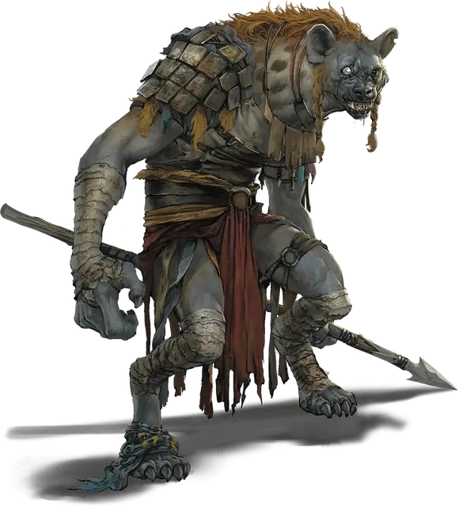

Гнолл
Gnoll
Средний Гуманоид (Гнолл), хаотично-злой

Класс Доспеха 15 (шкурный доспех, щит)
Хиты 22 (5к8)
Скорость 30 футов
| мод | спас | ||
|---|---|---|---|
| СИЛ | 14 | +2 | +2 |
| ЛОВ | 12 | +1 | +1 |
| ТЕЛ | 11 | +0 | +0 |
| мод | спас | ||
|---|---|---|---|
| ИНТ | 6 | −2 | −2 |
| МДР | 10 | +0 | +0 |
| ХАР | 7 | −2 | −2 |
Чувства тёмное зрение 60 футов, пассивное Восприятие 10
Языки Гноллий
Опасность 1/2 (100 опыта)
Бонус мастерства +2
Среда обитания Лес, Луг, Пустыня, Холмы
Особенности
Буйство. Если гнолл в свой ход опускает рукопашной атакой хиты существа до 0, он может бонусным действием переместиться на расстояние до половины своей скорости и совершить атаку укусом.
Действия
Укус. Рукопашная атака оружием: +4 к попаданию, досягаемость 5 футов, одно существо. Попадание: Колющий урон 4 (1к4 + 2).
Копье. Рукопашная или дальнобойная атака оружием: +4 к попаданию, досягаемость 5 футов или дистанция 20/60 футов, одна цель. Попадание: Колющий урон 5 (1к6 + 2), или колющий урон 6 (1к8 + 2), если используется двумя руками для совершения рукопашной атаки.
Длинный лук. Дальнобойная атака оружием: +3 к попаданию, дистанция 150/600 футов, одна цель. Попадание: Колющий урон 5 (1к8 + 1).
Описание
См. дополнительно статью: "Бестиарий: Гноллы"